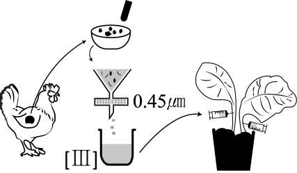

문제 1
어느 날 기르던 닭의 날개에서 악성 종양을 발견한 루스 씨는 이 종양의 원인을 알고 싶어 하나의 가설을 세우고 아래 그림과 같은 실험을 하였다.
닭 날개의 악성 종양을 채취하여 막자사발에 잘 갈았다. 그것을 \(0.45\) 마이크로미터(\(\mu m\))의 구멍을 갖는 여과지에 거른 다음 여과지를 통과한 육즙을 건강한 닭에 주사하였다. 몇 달 후 두 번째 닭 날개에도 악성 종양이 생긴 것을 관찰하였다. 다시 이 닭에 발생한 악성 종양을 막자사발에 갈아 여과지에 거르고 다른 닭에 주사 하였다. 이와 같은 실험을 여러 번 반복한 결과 여과지를 통과한 육즙 (I, II, III,...)을 주사 받은 모든 닭에서 악성 종양이 발생한 것을 확인하였다.
1-1
육즙을 주사 받은 모든 닭에 악성 종양이 발생한 것으로 보아 여과지를 통과한 육즙[III]에 존재하는 X는 [I]과 [II]에도 존재한다는 추론을 할 수 있다. 개체를 거치면서 연속적으로 악성 종양을 발생 시킬 수 있는 X의 조건들을 제시하고 X가 무엇인지 말하시오.
1-2
제시문의 X를 포함한 육즙[III]을 담뱃잎에 주입하면 담뱃잎에도 종양이 생길까? 생각한 답에 대한 논리적 근거를 제시하시오.
